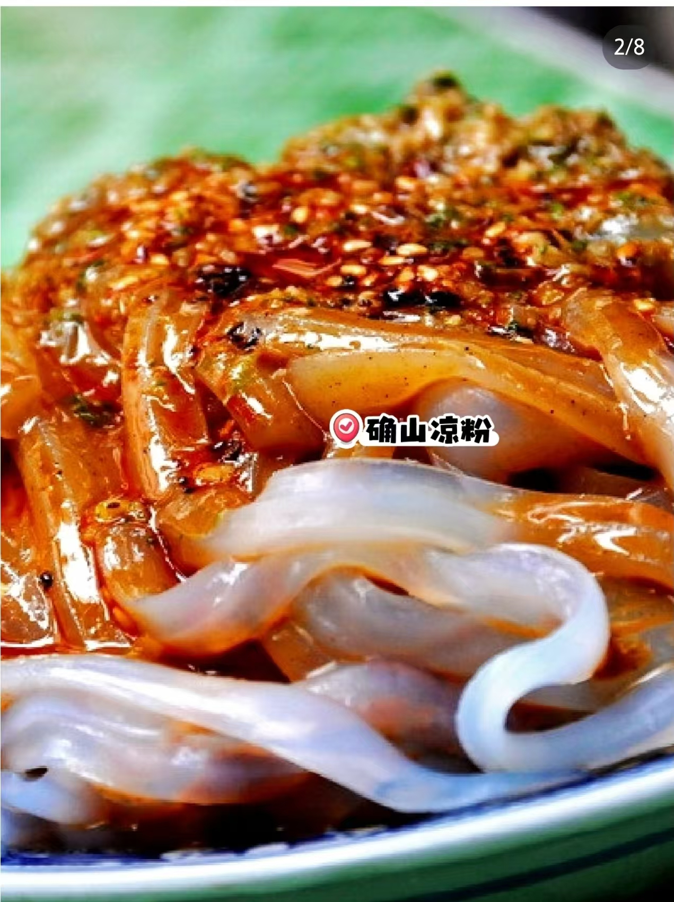
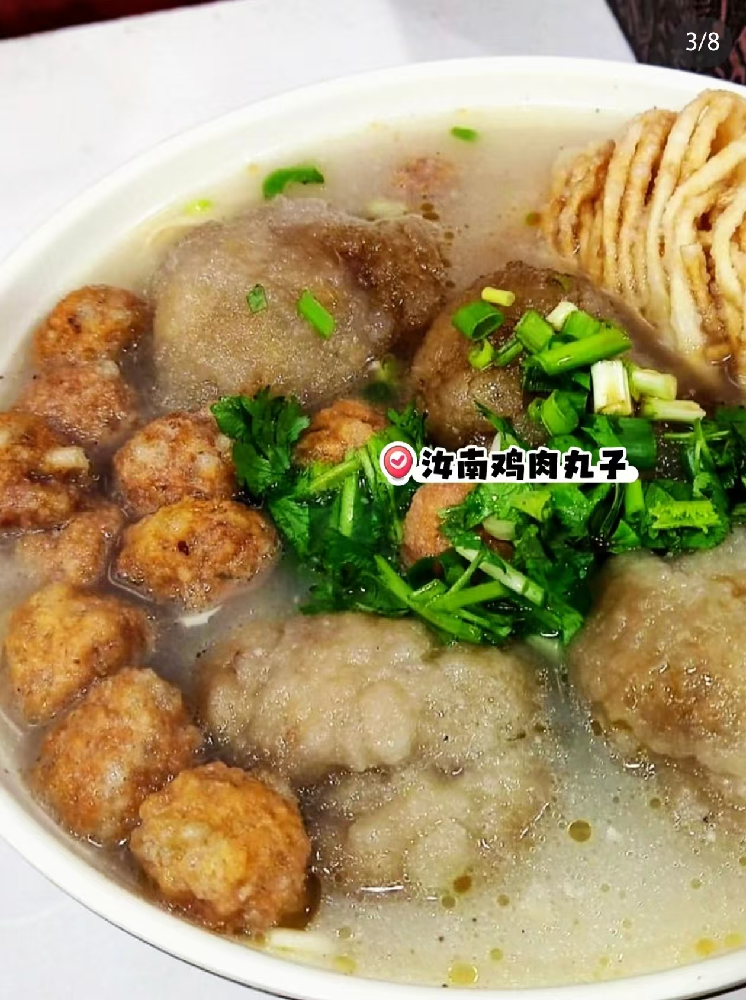
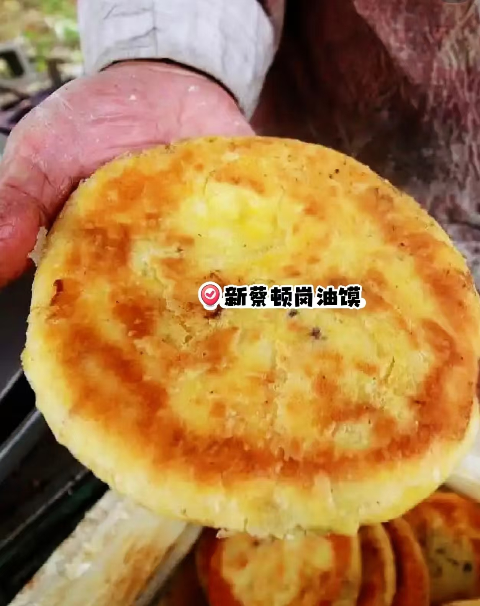
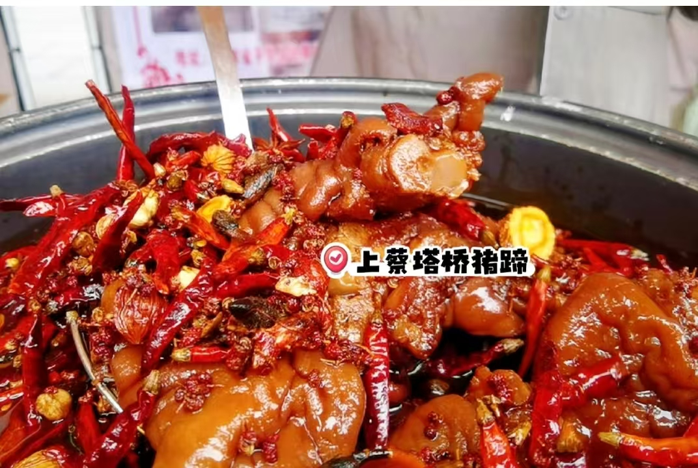
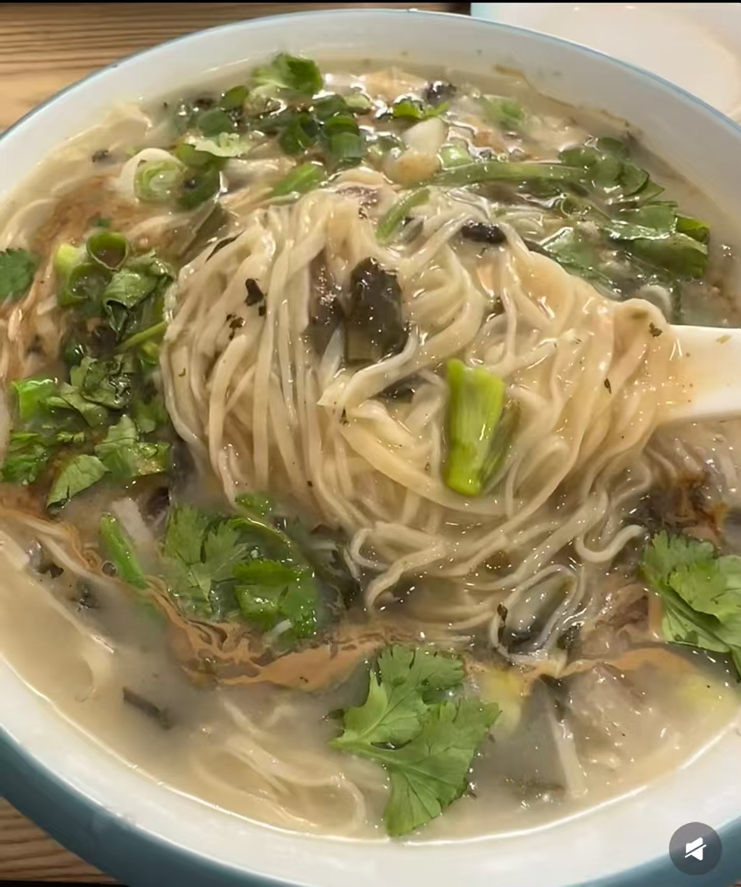

确山凉粉
千年传统小吃，采用豌豆搭配山泉水制作而成，口感晶莹爽滑，淋上芝麻酱、荆芥与油泼辣子，酸辣开胃，是夏日消暑佳品。
驻马店特色美食 · 本地伴手礼

千年传统小吃，采用豌豆搭配山泉水制作而成，口感晶莹爽滑，淋上芝麻酱、荆芥与油泼辣子，酸辣开胃，是夏日消暑佳品。

市级非物质文化遗产美食，选用土鸡捶茸搭配红薯粉炸制，再以鸡汤炖煮，外皮筋道、内里软嫩，是本地宴席上的招牌菜品。

河南非物质文化遗产，使用二十余种香料在地锅中烙制，外皮酥脆，内里层次分明、松软可口，葱香浓郁。

百年传统卤味，以十余味中草药慢火卤炖，肉质软糯入味，咸香不腻，老少皆宜。

经典豫南家常风味，手擀豆面搭配晒干的芝麻叶烹制，口味清淡暖胃，饱含浓郁的乡土气息。